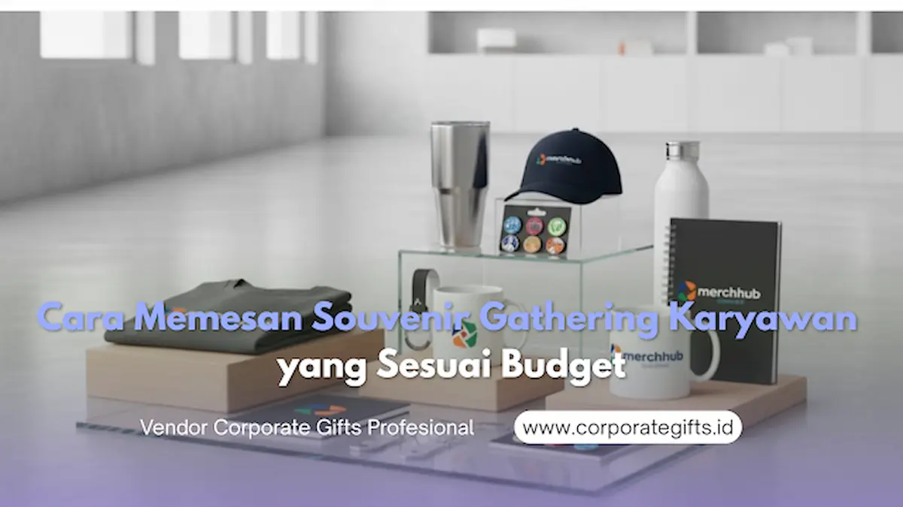

Corporate Gifts ID - Cara memesan souvenir gathering karyawan yang sesuai budget dilakukan melalui enam langkah terstruktur: tentukan tema acara, susun anggaran per kepala secara terukur, pilih produk fungsional berkualitas, seleksi vendor kredibel, rapikan desain visual dan kemasan, lalu lakukan pemesanan 3-4 minggu sebelum hari H. Dengan alur pengadaan yang tepat, perusahaan dapat menghadirkan souvenir kantor yang berkesan tanpa risiko pembengkakan biaya tak terduga.
Bagi banyak perusahaan, acara gathering karyawan atau family gathering menjadi momen krusial untuk mempererat hubungan antartim, memacu motivasi kerja, dan merayakan pencapaian bersama. Di balik keseruan acara, souvenir sering kali menjadi elemen yang paling diingat karena barang tersebut terus digunakan dalam aktivitas harian karyawan setelah acara usai. Artinya, souvenir bukan sekadar tanda mata, melainkan simbol apresiasi nyata sekaligus media internal branding yang membanggakan bagi setiap staf.
Poin Kunci Pengadaan Souvenir Gathering Efisien:
- Sinkronisasi Tema: Pastikan jenis souvenir relevan dengan tema acara (misal: outing outdoor vs gathering formal hotel).
- Kalkulasi Komprehensif: Hitung biaya produk, jasa cetak logo, packaging hardbox/pouch, ongkir, plus 10-15% buffer cadangan.
- Filosofi Utilitas: Prioritaskan barang dengan frekuensi pemakaian tinggi (tumbler SUS 304, powerbank, organizer bag).
- Lead Time Aman: Amankan pemesanan minimal 3-4 minggu lebih awal untuk menghindari surcharge biaya produksi kilat.
Apa Itu Souvenir Gathering Karyawan?
Souvenir gathering karyawan adalah barang custom bermerek perusahaan yang dibagikan kepada seluruh peserta acara internal, seperti outing tahunan, family day, team building, atau perayaan anniversary divisi. Fungsinya mencakup tiga aspek strategis: bentuk apresiasi tulus atas dedikasi karyawan, media penguat identitas brand (corporate culture), serta memorabilia pengingat momen kebersamaan.
Produk yang paling populer digunakan mencakup tumbler vacuum stainless, tote bag kanvas ramah lingkungan, pouch organizer travel, notebook kerja berlogo, hingga paket corporate gift set eksklusif.
1. Tentukan Tujuan dan Tema Gathering
Langkah pertama sebelum memilih barang promosi adalah memetakan tujuan acara. Apakah gathering kali ini berfokus pada penguatan kolaborasi lintas divisi, perayaan milestone tahunan, atau murni rekreasi keluarga? Tema acara akan menjadi kompas dalam memilih jenis souvenir yang relevan dan mempersempit opsi produk sehingga anggaran teralokasikan secara presisi.
Sebagai contoh, untuk acara bertema "Together We Grow", cinderamata ramah lingkungan seperti tanaman meja mini, notebook kertas daur ulang, atau pouch goni mencerminkan nilai keberlanjutan. Sementara itu, untuk tema kasual luar ruangan seperti "Fun Day Out", barang fungsional seperti tumbler tahan panas dingin, topi baseball bordir, atau payung lipat otomatis akan langsung terpakai di lokasi acara.
2. Buat Anggaran Realistis dan Terukur
Setelah tema ditetapkan, susun struktur anggaran per kepala secara terperinci. Banyak panitia terjebak menghitung harga satuan produk saja, tanpa memperhitungkan biaya setting artwork logo, plat cetak, biaya kemasan khusus, dan ongkos ekspedisi kargo.
Rumus alokasi anggaran yang biasa digunakan divisi HR dan komite pengadaan korporat:
- Budget Satuan Bersih (Nett per Pax):
(Total Pagu Anggaran - Biaya Cetak/Mastering - Estimasi Ongkos Kirim) / Jumlah Peserta. - Dana Cadangan (Buffer Fund): Sisihkan 10-15% dari total pagu untuk antisipasi revisi desain darurat atau penambahan peserta menit akhir.
- Kuantitas Pesanan (Safety Stock): Pesan jumlah total peserta ditambah 5% stok cadangan untuk kebutuhan sampel arsip, produk rusak, atau tamu VIP tak terduga.
Estimasi Budget Souvenir Gathering per Karyawan
Sebagai panduan saat menyusun Rencana Anggaran Biaya (RAB) ke jajaran direksi, berikut matriks rentang harga souvenir gathering yang umum digunakan oleh korporasi di Indonesia:
| Kategori Budget per Pax | Rekomendasi Produk Souvenir | Teknik Branding | Karakteristik & Keunggulan |
|---|---|---|---|
| Tier Ekonomis (Rp15.000 - Rp35.000) | Pouch spunbond, gantungan kunci metal, lanyard printing + ID card holder, kipas lipat | Sablon 1-2 warna, printing digital lanyard | Sangat cocok untuk event skala besar ratusan hingga ribuan peserta dengan efisiensi biaya maksimal. |
| Tier Standar (Rp35.000 - Rp75.000) | Tote bag kanvas blacu, mug keramik custom, tumbler plastik BPA-Free, pulpen metal grafir | Sablon rubber, decal keramik, laser engraving | Keseimbangan ideal antara estetika modern, ketahanan pakai, dan visibilitas identitas perusahaan. |
| Tier Premium (Rp75.000 - Rp150.000) | Tumbler stainless SUS 304 vacuum, powerbank slim 10.000 mAh, payung lipat otomatis anti-UV | Laser marking, UV print full color high-resolution | Material solid, daya tahan tahunan, memberikan persepsi penghargaan tinggi bagi loyalitas staf. |
| Tier Eksekutif (Di atas Rp150.000) | Gift set eksklusif (Tumbler + Agenda Kulit PU + Pen Parker), backpack laptop, smart gadget | Deboss emboss kulit, grafir laser presisi, hardbox pita | Mewah, elegan, sempurna untuk gathering tahunan direksi, manajerial, atau apresiasi tim berprestasi. |
3. Prioritaskan Kualitas dan Nilai Fungsi
Souvenir gathering yang berhasil bukan dinilai dari seberapa banyak pernak-pernik yang dibagikan, melainkan seberapa tinggi nilai guna barang tersebut bagi karyawan. Memilih produk murah berkualitas rendah demi menghemat beberapa ribu rupiah sering kali menjadi bumerang, karena barang yang mudah rusak dalam hitungan hari justru menimbulkan persepsi negatif terhadap citra perusahaan.
Terapkan satu kriteria uji sederhana: "Apakah cinderamata ini akan dipakai karyawan minimal 1 hingga 2 kali dalam seminggu?" Jika jawabannya ya (seperti botol minum harian, payung musim hujan, atau tas laptop), maka investasi pengadaan Anda dipastikan tepat sasaran dan berdaya guna jangka panjang.

Kombinasi apparel, tumbler stainless, dan stationary premium dalam paket souvenir gathering korporat.
4. Pilih Vendor Souvenir yang Tepat
Menentukan mitra vendor B2B merupakan pilar penentu kelancaran acara. Vendor berpengalaman tidak hanya bertindak sebagai penjual barang, tetapi berperan sebagai konsultan yang mampu memberikan solusi alternatif saat menghadapi keterbatasan anggaran atau tenggat waktu yang ketat.
Kriteria wajib yang harus diverifikasi sebelum menerbitkan Surat Perintah Kerja (SPK) atau Purchase Order (PO):
- Legalitas Usaha Resmi: Memiliki izin usaha berbadan hukum (PT/CV) dan kemampuan menerbitkan faktur pajak resmi (PPN).
- Transparansi Penawaran (RAB): Rincian penawaran memisahkan harga unit barang, biaya cetak branding, packaging, dan opsi pengiriman kargo.
- Fasilitas Mockup & Proofing Sampel: Ketersediaan mockup visual 3D serta pembuatan sampel fisik pra-produksi massal.
- Garansi Purna Jual: Kebijakan tertulis penggantian produk 100% apabila ditemukan cacat pabrik atau kesalahan cetak logo.
5. Pertimbangkan Desain dan Kemasan
Kemasan dan tata letak desain visual memiliki andil besar dalam mengangkat nilai persepsi sebuah souvenir. Barang dengan harga terjangkau bisa terlihat sangat mewah apabila dibungkus dalam hardbox eksklusif dengan sentuhan pita satin atau hotprint emas.
Dalam penataan grafis, terapkan prinsip minimalist corporate branding. Hindari mencetak logo perusahaan dengan ukuran raksasa di bagian depan produk, karena hal tersebut kerap membuat karyawan enggan memakainya di luar lingkungan kantor. Tempatkan logo dalam ukuran proporsional (2-4 cm) dengan teknik grafir laser monokrom atau deboss subtle yang elegan.
6. Pesan Lebih Awal untuk Efisiensi Biaya
Waktu pemesanan berbanding lurus dengan efisiensi anggaran. Pemesanan mendadak (kurang dari 2 minggu) memaksa vendor menjalankan lembur produksi kilat dan pengiriman via ekspedisi kilat udara yang memakan biaya operasional berlipat ganda.
Gunakan panduan linimasa pengadaan ideal berikut:
| Tahapan Waktu | Aktivitas Utama Panitia Gathering | Output / Dokumen |
|---|---|---|
| H-6 Minggu | Finalisasi konsep acara, estimasi jumlah pax, dan penentuan pagu anggaran maksimal. | Brief kebutuhan souvenir dan pagu RAB awal |
| H-5 Minggu | Permintaan penawaran harga resmi (RFQ) ke 2-3 vendor terpilih dan perbandingan spesifikasi sampel. | Tabel komparasi harga dan penilaian kualitas sampel |
| H-4 Minggu | Penerbitan PO/SPK, persetujuan mockup digital final, pembayaran uang muka (DP), dan mulai produksi massal. | Purchase Order (PO) & Approval sheet desain |
| H-1 Minggu | Proses Quality Control (QC) akhir di workshop vendor, packaging, dan pengiriman kargo ke lokasi gathering. | Berita Acara Serah Terima (BAST) & pelunasan |
Kesalahan yang Sering Terjadi saat Memesan Souvenir
Berdasarkan evaluasi pengadaan korporat, berikut beberapa kekeliruan fatal yang wajib dihindari:
- Memilih Produk Sebelum Menetapkan Anggaran: Menyebabkan rencana pengadaan bolak-balik direvisi di tingkat pimpinan karena melebihi batas pagu.
- Pemesanan Tanpa Safety Stock: Memesan pas sesuai daftar hadir tanpa cadangan 5%, sehingga kelabakan saat ada peserta tambahan atau pergantian staf.
- Melewatkan Approval Mockup & Proofing Fisik: Mengakibatkan salah eja nama perusahaan, resolusi logo pecah, atau warna branding melenceng dari brand guideline.
- Mengabaikan Komponen Ongkos Logistik: Tidak memperhitungkan berat dan volume barang souvenir dalam pengiriman antarkota/pulau.
Kesimpulan dan Konsultasi Pengadaan
Souvenir gathering karyawan bukan sekadar pelengkap seremonial, melainkan representasi penghargaan dan investasi jangka panjang dalam membangun loyalitas tim internal. Melalui perencanaan matang, pemilihan produk fungsional, dan kolaborasi bersama vendor B2B tepercaya, perusahaan dapat menghadirkan paket souvenir yang memukau tanpa melampaui alokasi budget yang telah ditetapkan.
Konsultasikan rencana pengadaan souvenir gathering perusahaan Anda bersama tim spesialis CorporateGifts.ID. Dapatkan penawaran harga resmi dan visual mockup digital gratis melalui formulir permintaan penawaran harga hari ini juga.